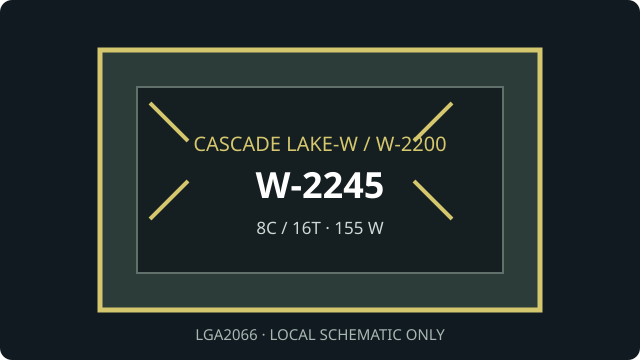

[ INDIVIDUAL WORKSTATION CPU ]
Intel Xeon W-2245
Cascade Lake-W (Xeon W-2200 series), 2019. Exact model: Intel Xeon W-2245. 8 cores/16 threads; 3.90 GHz base / 4.50 GHz maximum turbo; 16.5 MB cache; 155 W TDP; LGA2066.

MODEL ID: Intel Xeon W-2245. Verify CPU revision, C422 board validation and BIOS support as a matched platform.
Model specifications
| Architecture / generation | Cascade Lake-W, Xeon W-2200 workstation generation (2019) |
|---|---|
| Exact part | Intel Xeon W-2245 |
| Package / socket | FC-LGA2066 (LGA2066 / Socket R4) |
| Compute and clocks | 8 cores / 16 threads; 3.90 GHz base; up to 4.50 GHz Intel Turbo Boost 2.0 |
| Cache / power | 16.5 MB Intel Smart Cache; 155 W TDP |
| Memory | 4-channel DDR4-2933 ECC; up to 1 TB maximum subject to board, DIMM type and configuration |
| Expansion | 48 PCI Express 3.0 lanes from CPU |
| Board compatibility | C422/LGA2066 workstation board with documented Xeon W-2200 support, such as Supermicro X11SPA-TF; consult its precise CPU list, BIOS minimum and board revision notes for W-2245. |
Compatibility and service
- Check the board's exact CPU support list and minimum BIOS; W-2100 socket compatibility does not assure W-2200 support.
- Use quad-channel DDR4-2933 ECC modules validated by the motherboard QVL and follow its population rules.
- Use a cooler and power system rated for the 155 W TDP; ensure sustained-load case airflow.
- No integrated graphics; use a discrete graphics device where video output is needed.
Sources & further reading
- Intel ARK — Xeon W-2245 model lookupIntel manufacturer product specification and ordering reference.
- Intel — Xeon W-2200 processors product briefOfficial generation and workstation platform overview.
- Supermicro — X11SPA-TF workstation motherboardBoard maker's CPU platform and firmware documentation; check exact SKU support.